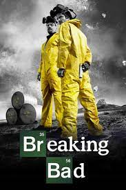

Breaking Bad

Rating:
Fecha de estreno: 20 de enero de 2008
Duracion: 5 temporadas, 62 episodios en total
Sinopsis:Walter White (Bryan Cranston) es un frustrado profesor de química en un instituto, padre de un joven discapacitado y con una mujer (Anna Gunn) embarazada. Además, trabaja en un lavadero de vehículos por las tardes. Cuando le diagnostican un cáncer pulmonar terminal se plantea qué pasará con su familia cuando él muera.
Genero de la pelicula: Crimen/Drama/Comedia negra